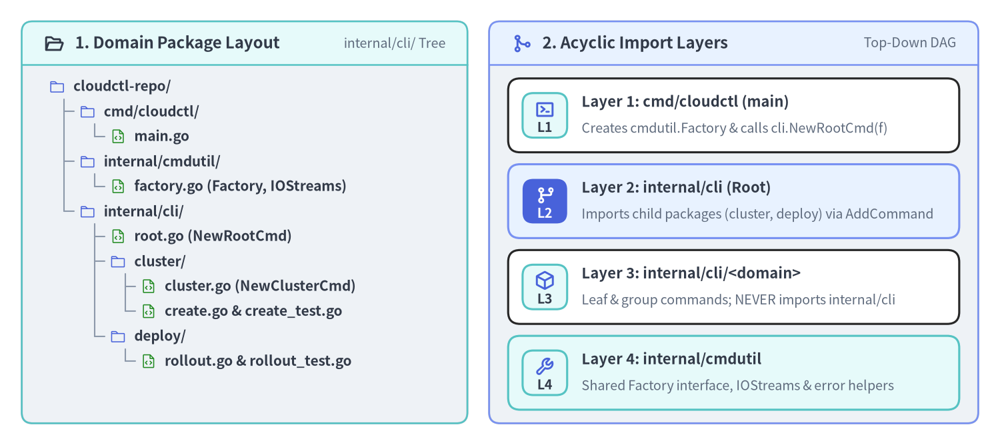
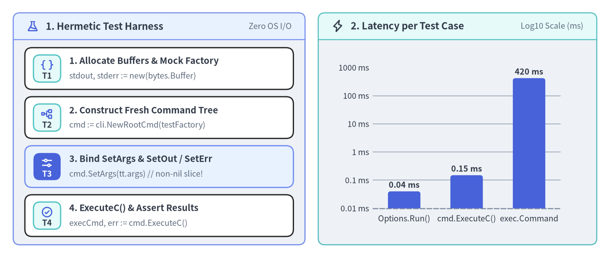

Multi-Package cmd/ Layout & Hermetic In-Memory Testing
When a CLI grows past 15–20 subcommands, placing every New*Cmd() file inside a single flat cmd/ package creates a crowded namespace where any command can accidentally touch internal fields of another command. At the same time, testing CLI commands by compiling a binary and spawning OS subprocesses (os/exec.Command) slows test suites down to tens of seconds. This page shows how to organize a multi-package domain hierarchy without circular imports and how to write sub-millisecond, table-driven in-memory unit tests using SetArgs, SetOut, SetErr, SetIn, and ExecuteC().

Source Code
from drawlib.canvas import save, setup
from drawlib.icons import phosphor
from drawlib.preset_colors import CssColors
from drawlib.smartarts import CardList, Panel, TreeNode
from drawlib.styles import Colors, Styles
setup(width=184, height=82, dpi=150)
left_panel = Panel(
"1. Domain Package Layout",
"internal/cli/ Tree",
style=Styles.Neutral.patch(shape_r=2.0),
header_style=Styles.SecondaryNeutral.patch(shape_line_width=1.2),
text_style=Styles.DarkBold.patch(text_size=11.5),
description_style=Styles.Muted.patch(text_size=9.5),
icon=phosphor.folder_open,
icon_style=Styles.DarkBold,
header_variant="filled",
header_height=8.0,
)
left_panel.draw((4.0, 4.0), width=82.0, height=74.0)
TreeNode.register_drawing_item(
name="pkg_dir",
location="before",
padding_width=4.5,
function=phosphor.folder,
style=Styles.Primary.patch(icon_color=Colors.Primary),
args={"width": 3.0},
)
TreeNode.register_drawing_item(
name="pkg_go",
location="before",
padding_width=4.5,
function=phosphor.file_code,
style=Styles.Primary.patch(icon_color=CssColors.ForestGreen),
args={"width": 3.0},
)
tree = TreeNode(
"cloudctl-repo/",
text_style=Styles.DarkBold.patch(text_size=10.0),
line_style=Styles.Muted.patch(line_width=1.0),
line_horizontal_margin=2.8,
line_horizontal_length=2.8,
line_vertical_margin=4.6,
children=[
TreeNode(
"cmd/cloudctl/",
children=[TreeNode("main.go").set_drawing_item("pkg_go")],
).set_drawing_item("pkg_dir"),
TreeNode(
"internal/cmdutil/",
children=[TreeNode("factory.go (Factory, IOStreams)").set_drawing_item("pkg_go")],
).set_drawing_item("pkg_dir"),
TreeNode(
"internal/cli/",
children=[
TreeNode("root.go (NewRootCmd)").set_drawing_item("pkg_go"),
TreeNode(
"cluster/",
children=[
TreeNode("cluster.go (NewClusterCmd)").set_drawing_item("pkg_go"),
TreeNode("create.go & create_test.go").set_drawing_item("pkg_go"),
],
).set_drawing_item("pkg_dir"),
TreeNode(
"deploy/",
children=[TreeNode("rollout.go & rollout_test.go").set_drawing_item("pkg_go")],
).set_drawing_item("pkg_dir"),
],
).set_drawing_item("pkg_dir"),
],
).set_drawing_item("pkg_dir")
tree.draw(xy=(9.0, 66.0))
right_panel = Panel(
"2. Acyclic Import Layers",
"Top-Down DAG",
style=Styles.Neutral.patch(shape_r=2.0),
header_style=Styles.PrimaryNeutral.patch(shape_line_width=1.2),
text_style=Styles.DarkBold.patch(text_size=11.5),
description_style=Styles.Muted.patch(text_size=9.5),
icon=phosphor.git_merge,
icon_style=Styles.PrimaryBold,
header_variant="filled",
header_height=8.0,
)
right_panel.draw((90.0, 4.0), width=90.0, height=74.0)
r_xy, r_w, r_h = right_panel.get_content_box((90.0, 4.0), width=90.0, height=74.0, padding=(3.5, 2.5))
layers = CardList(
style=Styles.White,
text_style=Styles.DarkBold.patch(text_size=10.5),
description_style=Styles.Muted.patch(text_size=9.5),
badge_shape="rounded_rect",
badge_style=Styles.SecondaryNeutral,
badge_text_style=Styles.DarkBold.patch(text_size=9.5),
icon_style=Styles.PrimaryBold,
direction="vertical",
spacing=2.2,
)
layers.add(
"Layer 1: cmd/cloudctl (main)",
"Creates cmdutil.Factory & calls cli.NewRootCmd(f)",
badge_text="L1",
icon=phosphor.terminal_window,
)
layers.add(
"Layer 2: internal/cli (Root)",
"Imports child packages (cluster, deploy) via AddCommand",
badge_text="L2",
icon=phosphor.git_branch,
style=Styles.PrimaryNeutral,
badge_style=Styles.PrimaryFlat,
badge_text_style=Styles.WhiteBold.patch(text_size=9.5),
icon_style=Styles.WhiteBold,
)
layers.add(
"Layer 3: internal/cli/<domain>",
"Leaf & group commands; NEVER imports internal/cli",
badge_text="L3",
icon=phosphor.cube,
)
layers.add(
"Layer 4: internal/cmdutil",
"Shared Factory interface, IOStreams & error helpers",
badge_text="L4",
icon=phosphor.wrench,
style=Styles.SecondaryNeutral,
)
layers.draw(r_xy, width=r_w, height=r_h)
save()
1. Multi-Package cmd/ Architecture Without Circular Imports
In Go, if internal/cli (where NewRootCmd lives) imports internal/cli/cluster, then internal/cli/cluster cannot import internal/cli to access RootOptions or Factory.
The solution used by gh (pkg/cmd/... + pkg/cmdutil) and kubectl is a strict 4-layer Directed Acyclic Graph (DAG):
internal/cmdutil(Layer 4 — Leaf Foundation): DefinesIOStreams, theFactoryinterface, and shared flag helpers. It importscobraandpflag, but never imports any command package.internal/cli/<domain>(Layer 3 — Subcommand Packages): Each command group (cluster,deploy,auth) lives in its own subpackage, exportsNewCmd<Group>(f cmdutil.Factory) *cobra.Command, and wires its own leaf subcommands (NewCmdClusterCreate(f),NewCmdClusterDelete(f)).internal/cli(Layer 2 — Root Assembler): DefinesNewRootCmd(f cmdutil.Factory) *cobra.Commandand attaches each domain group viarootCmd.AddCommand(cluster.NewCmdCluster(f), deploy.NewCmdDeploy(f)).cmd/<binary>/main.go(Layer 1 — Binary Entrypoint): Constructs the productioncmdutil.Factoryimplementation (wired toos.Stdin,os.Stdout,os.Stderr), buildscli.NewRootCmd(f), and callsExecuteContext(ctx).
// internal/cli/cluster/cluster.go
package cluster
import (
"example.com/cloudctl/internal/cmdutil"
"github.com/spf13/cobra"
)
// NewCmdCluster groups all "cloudctl cluster <subcommand>" operations.
func NewCmdCluster(f cmdutil.Factory) *cobra.Command {
cmd := &cobra.Command{
Use: "cluster",
Short: "Manage Kubernetes clusters",
// A pure grouping command omits Run/RunE so Cobra prints help when invoked bare.
}
cmd.AddCommand(
NewCmdClusterCreate(f),
NewCmdClusterDelete(f),
)
return cmd
}
2. Hermetic In-Memory Testing with SetArgs, SetOut, and ExecuteC
Cobra's *cobra.Command is designed to be executed entirely in memory without touching os.Args, os.Stdout, os.Stderr, or os.Stdin:
| Method | Signature | Default Fallback When nil |
Test Harness Usage |
|---|---|---|---|
cmd.SetArgs(a) |
func (c *Command) SetArgs(a []string) |
os.Args[1:] |
Pass the exact CLI token slice after the binary name (e.g., []string{"cluster", "create", "prod", "--nodes=3"}). |
cmd.SetOut(newOut) |
func (c *Command) SetOut(newOut io.Writer) |
os.Stdout |
Pass a *bytes.Buffer to capture cmd.Print*, --help, and --version output. |
cmd.SetErr(newErr) |
func (c *Command) SetErr(newErr io.Writer) |
os.Stderr |
Pass a *bytes.Buffer to capture cmd.PrintErr* and error diagnostics. |
cmd.SetIn(newIn) |
func (c *Command) SetIn(newIn io.Reader) |
os.Stdin |
Pass strings.NewReader("yes\n") to test interactive confirmation prompts. |
cmd.ExecuteC() |
func (c *Command) ExecuteC() (*Command, error) |
Runs on c.Root() |
Executes the command tree and returns both the leaf *cobra.Command that ran and any error. |

Source Code
from drawlib.canvas import save, setup
from drawlib.charts.bar import BarChart
from drawlib.icons import phosphor
from drawlib.smartarts import CardList, Panel
from drawlib.styles import Styles
setup(width=184, height=78, dpi=150)
left_panel = Panel(
"1. Hermetic Test Harness",
"Zero OS I/O",
style=Styles.Neutral.patch(shape_r=2.0),
header_style=Styles.PrimaryNeutral.patch(shape_line_width=1.2),
text_style=Styles.DarkBold.patch(text_size=11.5),
description_style=Styles.Muted.patch(text_size=9.5),
icon=phosphor.flask,
icon_style=Styles.PrimaryBold,
header_variant="filled",
header_height=8.0,
)
left_panel.draw((4.0, 4.0), width=88.0, height=70.0)
l_xy, l_w, l_h = left_panel.get_content_box((4.0, 4.0), width=88.0, height=70.0, padding=(3.5, 2.5))
steps = CardList(
style=Styles.White,
text_style=Styles.DarkBold.patch(text_size=10.5),
description_style=Styles.Muted.patch(text_size=9.5),
badge_shape="rounded_rect",
badge_style=Styles.SecondaryNeutral,
badge_text_style=Styles.DarkBold.patch(text_size=9.5),
icon_style=Styles.PrimaryBold,
direction="vertical",
spacing=2.2,
)
steps.add(
"1. Allocate Buffers & Mock Factory",
"stdout, stderr := new(bytes.Buffer)",
badge_text="T1",
icon=phosphor.brackets_curly,
)
steps.add(
"2. Construct Fresh Command Tree",
"cmd := cli.NewRootCmd(testFactory)",
badge_text="T2",
icon=phosphor.tree_structure,
)
steps.add(
"3. Bind SetArgs & SetOut / SetErr",
"cmd.SetArgs(tt.args) // non-nil slice!",
badge_text="T3",
icon=phosphor.sliders_horizontal,
style=Styles.PrimaryNeutral,
badge_style=Styles.PrimaryFlat,
badge_text_style=Styles.WhiteBold.patch(text_size=9.5),
icon_style=Styles.WhiteBold,
)
steps.add(
"4. ExecuteC() & Assert Results",
"execCmd, err := cmd.ExecuteC()",
badge_text="T4",
icon=phosphor.check_circle,
)
steps.draw(l_xy, width=l_w, height=l_h)
right_panel = Panel(
"2. Latency per Test Case",
"Log10 Scale (ms)",
style=Styles.Neutral.patch(shape_r=2.0),
header_style=Styles.SecondaryNeutral.patch(shape_line_width=1.2),
text_style=Styles.DarkBold.patch(text_size=11.5),
description_style=Styles.Muted.patch(text_size=9.5),
icon=phosphor.lightning,
icon_style=Styles.DarkBold,
header_variant="filled",
header_height=8.0,
)
right_panel.draw((96.0, 4.0), width=84.0, height=70.0)
chart = BarChart(
axis_line_style=Styles.MutedDashed,
categories=["Options.Run()", "cmd.ExecuteC()", "exec.Command"],
width=68.0,
height=50.0,
bar_width_ratio=0.52,
bar_r=0.8,
axis_text_style=Styles.Dark.patch(text_size=9.5),
grid_style=Styles.MutedThin,
value_text_style=Styles.DarkBold.patch(text_size=9.5),
value_format="{:g} ms",
)
chart.add_series("Median Duration", [0.04, 0.15, 420.0], style=Styles.PrimaryFlat)
chart.configure_y_axis(scale="log", min_value=0.01, max_value=1000.0, unit="ms")
chart.draw(xy=(104.0, 10.0))
save()
3. Writing a Reusable ExecuteCommandC Test Helper
Subtle Gotcha: cmd.SetArgs(nil) vs. cmd.SetArgs([]string{})
Look closely at lines 1105–1107 of Cobra's command.go:
// Inside (*Command).ExecuteC() in command.go:
if c.args == nil && filepath.Base(os.Args[0]) != "cobra.test" {
args = os.Args[1:]
}
When you run go test ./internal/cli/..., the compiled test binary is named cli.test (not cobra.test). If a test case passes nil to cmd.SetArgs(nil) (or forgets to call SetArgs), c.args == nil evaluates to true, and Cobra parses the -test.v / -test.run flags passed by go test in os.Args[1:]—causing spurious unknown shorthand flag: 't' in -test.v failures!
Golden Rule for Testing: Always ensure your test helper passes a non-nil empty slice
[]string{}whenlen(args) == 0soc.args != nilis always true!
Production Table-Driven Test Suite (create_test.go)
package cluster_test
import (
"bytes"
"strings"
"testing"
"example.com/cloudctl/internal/cli"
"example.com/cloudctl/internal/cmdutil"
"github.com/spf13/cobra"
)
// executeCommandC runs a fresh root command tree hermetically in memory.
func executeCommandC(f cmdutil.Factory, args ...string) (*cobra.Command, string, string, error) {
stdout := new(bytes.Buffer)
stderr := new(bytes.Buffer)
rootCmd := cli.NewRootCmd(f)
rootCmd.SetIn(strings.NewReader(""))
rootCmd.SetOut(stdout)
rootCmd.SetErr(stderr)
// CRITICAL: Never leave args as nil, or Cobra will read os.Args[1:] (-test.v)!
if args == nil {
args = []string{}
}
rootCmd.SetArgs(args)
executedCmd, err := rootCmd.ExecuteC()
return executedCmd, stdout.String(), stderr.String(), err
}
func TestClusterCreateCmd(t *testing.T) {
t.Parallel()
tests := []struct {
name string
args []string
wantCmd string
wantStdout string
wantErr string
}{
{
name: "valid cluster creation with short and long flags",
args: []string{"cluster", "create", "prod-tokyo", "--nodes", "5", "-r", "ap-northeast-1"},
wantCmd: "create",
wantStdout: "Created cluster \"prod-tokyo\" (5 nodes in ap-northeast-1)\n",
},
{
name: "missing required positional cluster name",
args: []string{"cluster", "create"},
wantCmd: "create",
wantErr: "accepts 1 arg(s), received 0",
},
{
name: "invalid node count rejected by Validate()",
args: []string{"cluster", "create", "staging", "--nodes", "0"},
wantCmd: "create",
wantErr: "--nodes must be at least 1",
},
}
for _, tt := range tests {
t.Run(tt.name, func(t *testing.T) {
t.Parallel() // Safe because every subtest builds a fresh Command tree!
f := cmdutil.NewFakeFactory()
executedCmd, stdout, _, err := executeCommandC(f, tt.args...)
if executedCmd.Name() != tt.wantCmd {
t.Fatalf("executed command = %q, want %q", executedCmd.Name(), tt.wantCmd)
}
if tt.wantErr != "" {
if err == nil || !strings.Contains(err.Error(), tt.wantErr) {
t.Fatalf("err = %v, want substring %q", err, tt.wantErr)
}
return
}
if err != nil {
t.Fatalf("unexpected error: %v", err)
}
if stdout != tt.wantStdout {
t.Errorf("stdout = %q, want %q", stdout, tt.wantStdout)
}
})
}
}
Always Call ExecuteC() on the Root Command
Note that (*Command).ExecuteC() automatically climbs to the root command if called on a child (if c.HasParent() { return c.Root().ExecuteC() }), and c.args is read from the root command. Therefore, if you test a standalone subcommand (cmd := NewCmdClusterCreate(f)) without attaching it to NewRootCmd(f), pass []string{"prod-tokyo", "--nodes", "5"} (without the "cluster", "create" prefix) to cmd.SetArgs(...).
Next Steps
With a clean multi-package architecture and fast in-memory tests in place, continue to Chapter 3: Persistent, Local & Inherited Flags to master spf13/pflag flag sets, TraverseChildren, and flag normalization.